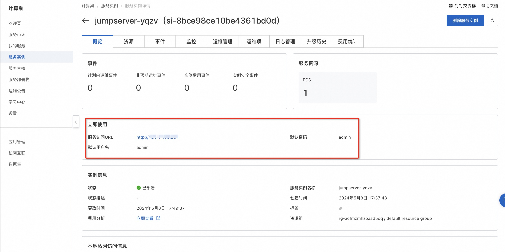
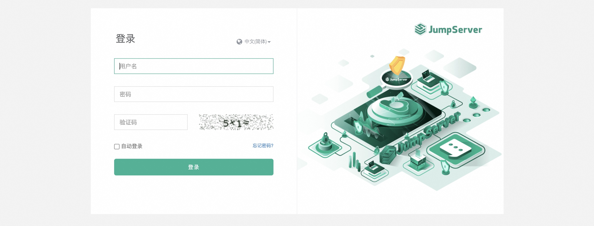

JumpServer社区版服务实例部署文档
概述
JumpServer 是广受欢迎的开源堡垒机，是符合 4A 规范的专业运维安全审计系统。JumpServer 帮助企业以更安全的方式管控和登录所有类型的资产，实现事前授权、事中监察、事后审计，满足等保合规要求。
计费说明
计费方式包括： - 按量付费（小时） - 包年包月
预估费用在创建实例时可实时看到。
RAM账号所需权限
JumpServer服务需要对ECS、VPC等资源进行访问和创建操作， 若您使用RAM用户创建服务实例，需要在创建服务实例前， 对使用的RAM用户的账号添加相应资源的权限。
| 权限策略名称 | 备注 |
|---|---|
| AliyunECSFullAccess | 管理云服务器服务（ECS）的权限 |
| AliyunVPCFullAccess | 管理专有网络（VPC）的权限 |
| AliyunROSFullAccess | 管理资源编排服务（ROS）的权限 |
| AliyunComputeNestUserFullAccess | 管理计算巢服务（ComputeNest）的用户侧权限 |
| AliyunCloudMonitorFullAccess | 管理云监控（CloudMonitor）的权限 |
部署流程
部署步骤
-
单击部署链接，进入服务实例部署界面，根据界面提示，填写参数完成部署。

-
查看服务实例。 服务实例创建成功后，部署时间大约需要2分钟。部署完成后，页面上可以看到对应的服务实例。进入服务实例详情页。

-
通过URL访问JumpServer服务

使用JumpServer
请访问JumpServer官网获取详细使用信息：JumpServer文档
© 2009-2022 Aliyun.com 版权所有